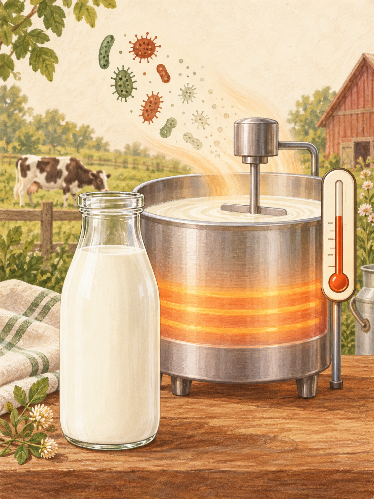
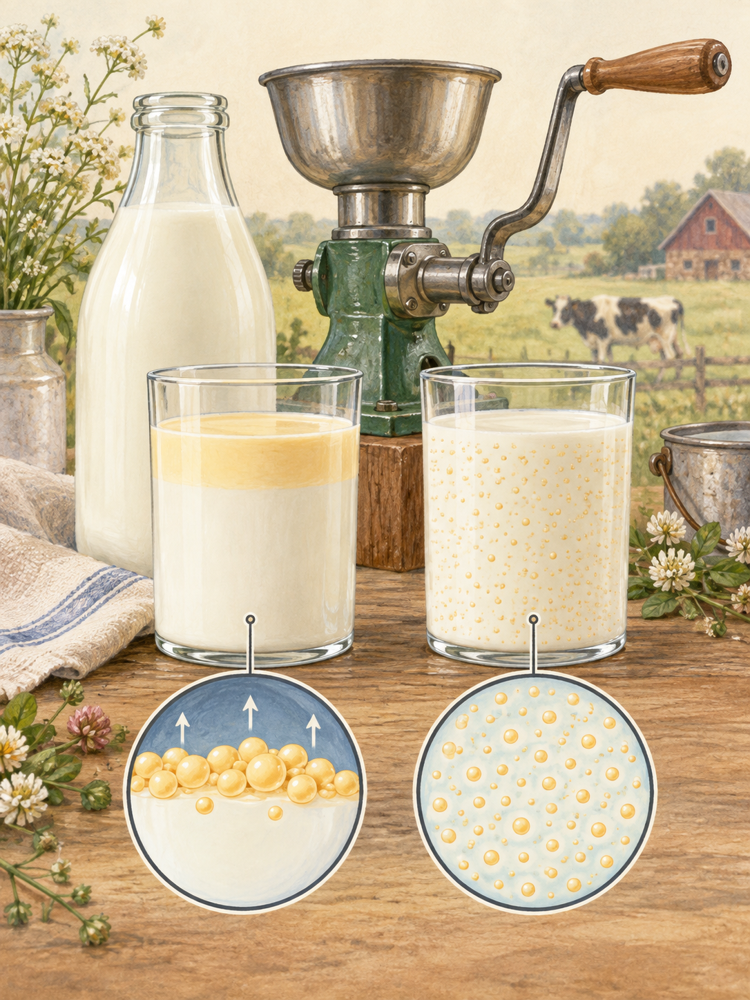

Learn about Pasteurization!
Click to learn
01 · Pasteurization
Learn about Pasteurization!
During pasteurization, milk is heated to a temperature that destroys harmful bacteria, but also the beneficial lactase present in raw milk. This leaves behind lactose without the enzyme needed to break it down. As a result, many people who are lactose intolerant struggle to digest pasteurized milk. Because raw milk still contains this enzyme, it may help some individuals with lactose intolerance digest it more easily. In addition, raw milk retains more of its natural vitamins and minerals—such as vitamin D and zinc—which can be diminished or destroyed during the pasteurization process.

Learn about Homogenization!
Click to learn
02 · Homogenization
Learn about Homogenization!
Homogenization—or emulsifying fat droplets in the milk so the cream doesn’t separate—began in the late 19th and early 20th centuries. While this did improve milk’s shelf life, it also altered the structure of the fat molecules, which may make homogenized milk difficult for some to digest and has unknown impacts on nutrient absorbency.
Though some prefer that uniform consistency, we’ll agree to disagree here.
We love the creamy texture of non-homogenized milk!